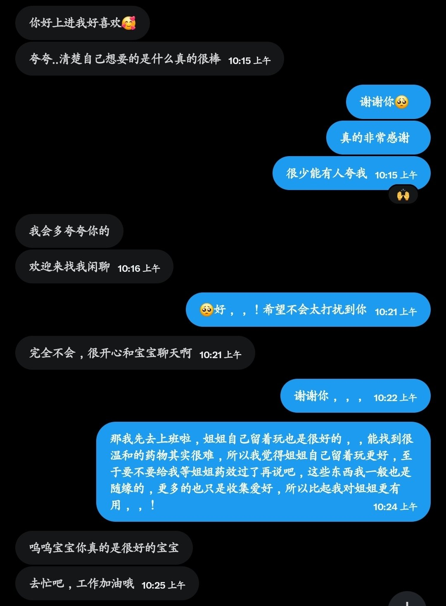

意之意
@lijunyi87429205
@Yesmynamehaer1 如果还有其他办法缓解痛苦，请不要让这个死亡多米诺延续下去……

Hereditarystupidity #鬼宿三
@Yesmynamehaer1
我真希望我不是因为疾病与疼痛才与她感同相受。但我最后什么也没做到，没能帮助或者注视着她，也没能改变我自己。为什么，为什么我们都越来越痛苦了？为什么我们只能换来这个下场？……我想她，我想我看到了我们相似的未来。我想我也许马上也会来陪你了。 https://t.co/oQzQXKZuTg https://t.co/CDJ6fa6MSL